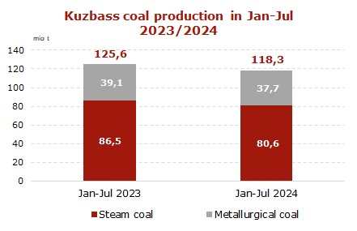
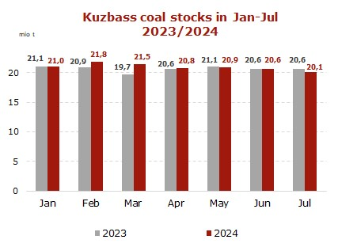

Coal production in Kuzbass down 5.8% in Jan-Jul 2024
by — 6 days ago — Reading Time: 2 mins read

Under the Ministry of Coal Industry of Kuzbass, in January-July 2024 coal mining enterprises in Kuzbass produced 118.3 mio t of coal (-7.3 mio t or -5.8% y-o-y).
In July 2024 coal extraction plunged to 15.4 mio t (-1.5 mio t or -8.9% vs. July 2023).
The production of coking coal for 7 months of 2024 totaled 37.7 mio t (-1.4 mio t or -3.6% y-o-y), whereas thermal coal extraction volumes shrank to 80.6 mio t (-5.9 mio t or -6.8% y-o-y).

Coal companies produced 78.7 mio t (-5.6 mio t or -6.6% y-o-y) at open-pit mines and 39.6 mio t (-1.7 mio t or -4.1% y-o-y) through underground mining.
As of August 01, 2024, coal stocks in Kuzbass amounted to 20.1 mio t (-0.5 mio t or -2.4% vs. August 01, 2023).
Sanctions and the emerging trend of halting operations at Russian underground and open-pit mines, along with logistical issues, may have a negative impact on the volumes of production and supplies of Russian high-quality coal to the world market in 2024.

In 2023, coal production in Kuzbass dropped to 214.2 mio t (-9.4 mio t or -4.2% vs. 2022).
Source: CCA Analytics